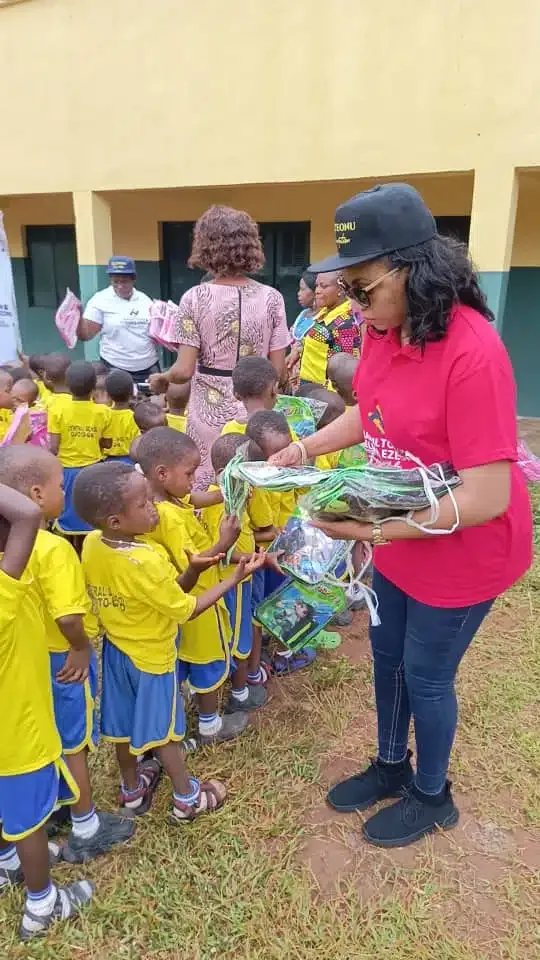

Idemili South
The distribution reached pupils in Ojoto, Oba, Nnokwa, Nnobi, Akwukwu, Awka-Etiti and Alor.
Read the reportFoundation
The Hamilton & Thelma Ezeonu Foundation helps pupils in Anambra State get school bags to carry and protect their books.

Dr. Thelma Ezeonu co-founded the foundation with Chief Hamilton Ezeonu. Its school-bag initiative began in Idemili South and extended to Anaocha, where she spoke directly with pupils about the value of their education.
The foundation also lists youth skills development, food and essentials for vulnerable households, health awareness and community development among its focus areas.
Visit the official foundation siteNovember 2025 · Idemili South
Figures for the November distribution are from PUNCH.
Distribution milestones
The distribution reached pupils in Ojoto, Oba, Nnokwa, Nnobi, Akwukwu, Awka-Etiti and Alor.
Read the reportPUNCH reported that 5,000 bags were distributed to public-school pupils. Dr. Ezeonu addressed pupils at Udoka Primary School in Agulu.
Read the report